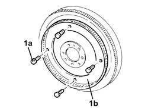

1024B60 phonic wheel on flywheel - r r
- Path
- Procedures > 10 ENGINE UNIT > 1024 CRANKSHAFT AND FLYWHEEL > 1024B ENGINE FLYWHEEL > 1024B60 phonic wheel on flywheel - r r
- Kind
- repair procedure (removal / refitting; the operation number is the code)
- Applies to
- engines: 1.3 JTD 16v; all production periods
- Interactive page
- https://sloeber94.github.io/elrnDB-fPnd/en/#/2752569
Applies to: engines: 1.3 JTD 16v; all production periods
 Removing
Removing
 Refitting
Refitting1. Undo the bolts (1a) and remove the phonic wheel on the flywheel for rpm sensor (1b).

Applies to: engines: 1.3 JTD 16v; all production periods
Refitting
RemovingFit the phonic wheel for the rpm sensor on the flywheel and fix it using the bolts to the specified torque
 | Fastening | Component | Ø | Value (daNm) |
|---|---|---|---|---|
- | Bolt | PHONIC WHEEL ON CRANKSHAFT | M6 | (Engine flywheel side) 0.8 ÷ 1.0 |